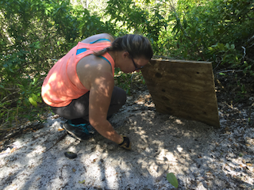

 Welcome to my new website! I am a PhD student in the Carnaval Lab at City College of New York and CUNY Graduate Center. I am broadly interested in understanding the drivers of diversity using a combination of approaches. I am especially interested in using information about the historical effects of climate to make inferences about how current climate change will effect species.
I received my MS from the University of Central Florida in the Parkinson Lab. My thesis research used statistical phylogeography to test hypotheses about the historical dispersal of mole skinks Plestiodon egregius.